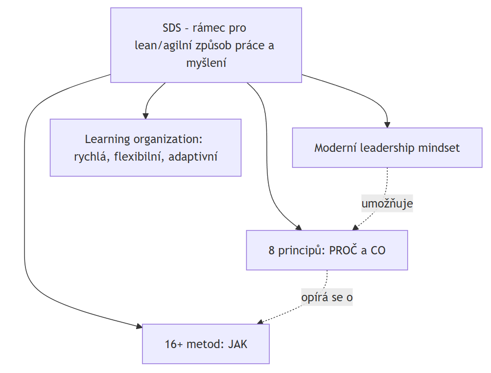
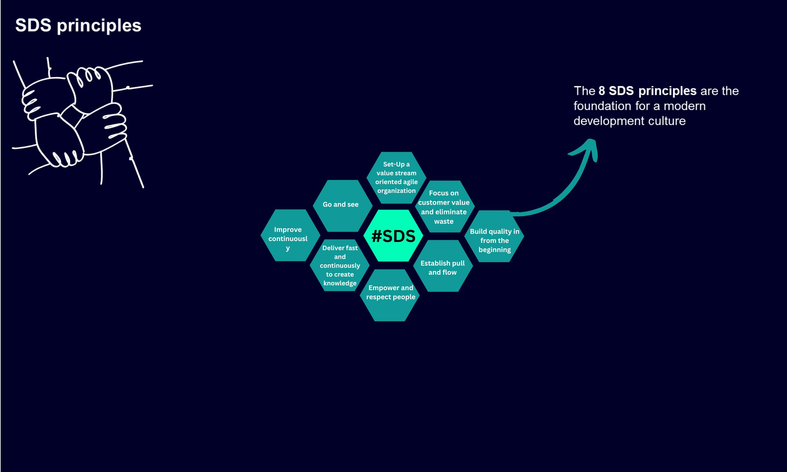
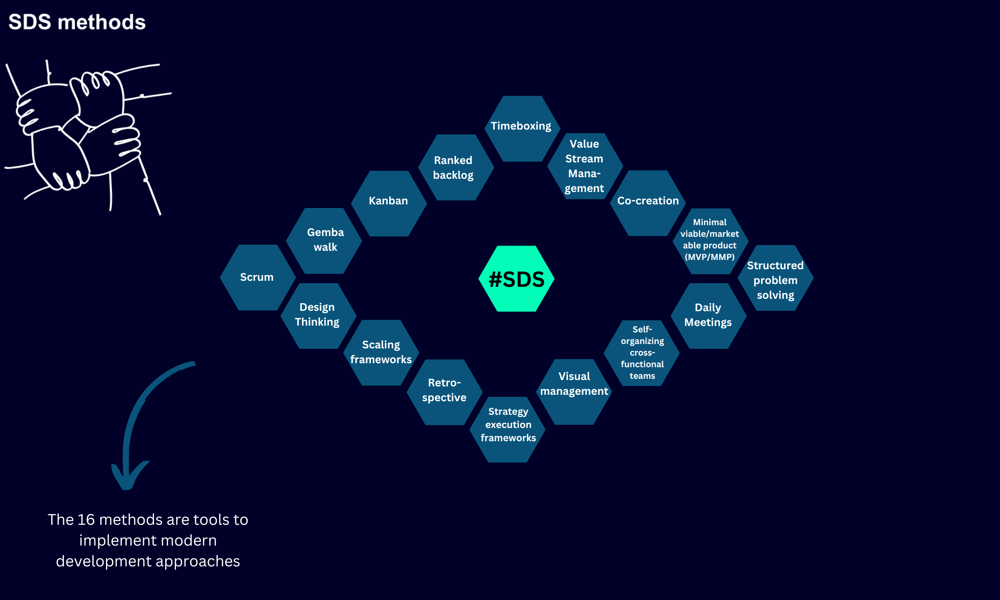

🟢 Siemens Development System (SDS)
#Summary / Introduction
Siemens Development System (SDS) is a corporate framework for change toward a lean/agile way of working and thinking across Siemens. According to the definition in the source wiki, it is a “frame for change towards a lean/agile way of work and mindset at Siemens" – in other words, neither a single methodology nor a mandatory process, but an overarching system that integrates proven principles and methods and supports them with a modern approach to leading people (leadership mindset).
The goal of SDS is to help Siemens become an organization that learns (learning organization) that is fast, flexible, and capable of succeeding in an uncertain environment (digitalization, artificial intelligence, disruptive business models). SDS is also a Community of Practice – a community of more than 50 experts across all business units (Business Units) and locations.
For architecture, the topic matters because several SDS principles (for example, “Build Quality in from the beginning", “Establish pull and flow", “Set-Up a value stream oriented agile organization") directly shape architectural decisions – independently deployable units, testability, technical debt management, and value flow. For testing, the principle Build Quality in from the beginning is particularly important; it is essentially a formulation of shift-left testing, defect prevention, and testability as a design property.
[!NOTE] All substantive facts in this paper come from the internal SDS Confluence wiki pages (export). The Common Mistakes, Examination Questions, and Model Answer sections are a didactic synthesis beyond the source and are marked accordingly.
#Definitions and Basic Concepts
| Concept | Definition | Significance in Architecture | Significance in Testing |
|---|---|---|---|
| SDS | A framework for moving to a lean/agile way of working and thinking at Siemens; integrates principles + methods + leadership mindset | Influences the system structure (value streams, independent teams) | Establishes a culture of early and continuous quality checks |
| Lean/Agile mindset | A way of thinking based on eliminating waste, value flow, experimentation, and learning | Determines the preference for small, verifiable increments | Favors short feedback loops (fast feedback) |
| Learning organization | An organization that systematically creates, shares, and uses knowledge | Architecture must enable rapid experiments and evolution | Tests are a learning tool, not just a checking tool |
| Value stream | An end-to-end flow of activities that creates value for the customer | Organization around the value stream, not functional silos | Testing is planned according to the flow, not the layers |
| Principle | An enduring guiding rule (why and what) | Guides architectural decisions | Guides the quality strategy |
| Method | A specific tool/practice that implements principles (how) | For example, MVP determines incremental delivery | For example, Retrospective improves the testing process |
| Community of Practice | A community of experts sharing and developing knowledge (50+ in SDS) | Spreads good architectural practices | Spreads good testing practices |
Key distinction for the examination: principles say WHY and WHAT (they are stable); methods say HOW (they can be replaced according to context). A typical mistake is to confuse them or introduce methods without understanding the principles.
#The Core Idea of SDS (Why It Was Created)
According to the source, SDS is driven by “game-changing" technologies – digitalization, data collection and analysis, artificial intelligence and machine learning, additive manufacturing, and disruptive business models. These trends bring opportunities as well as challenges (fast-moving competitors, nonlinear market developments). The response is rapid learning and excellence throughout the entire value stream, achieved by applying lean and agile principles.
SDS builds on the tradition of lean manufacturing at Siemens – specifically, the Siemens Performance System @ Production and Logistics (SPS@PL), which, according to the source, has been delivering a positive business impact in Siemens manufacturing for many years. SDS extends this philosophy from manufacturing to development and all other functions.
- Vision: Siemens – a learning and agile organization.
- Mission: shape a culture of experimentation, learning, and collaboration in trust; inspire and enable people to adopt the SDS mindset through principles and methods; support greater adaptability at Siemens; further develop SDS by sharing knowledge.
- Motto: shape. inspire. adapt.

#8 SDS Principles
The principles form the foundation of a modern development culture. Historically, they originate in the Toyota Production System (Focus on Customer Value, Set-Up value stream, Establish Pull and Flow, Improve Continuously), were extended with software-oriented principles from IBM and SAP (Deliver fast and continuously, Build Quality from the Beginning), and later supplemented with Go and See and Empower and Respect People.

| # | Principle | Core (According to the Source) | Connection to Architecture | Connection to Testing |
|---|---|---|---|---|
| 1 | Focus on customer value and eliminate waste | Close collaboration with stakeholders, understanding needs, eliminating non-value-adding activities | Do not build unnecessary components (YAGNI); value-driven architecture | Do not test everything indiscriminately, but according to risk and value (risk-based) |
| 2 | Establish pull and flow | Transparency, limiting the amount of parallel work (WIP), supporting flow, the “pull" principle | Independently deployable units, minimizing dependencies that block flow | Tests within the flow (continuous testing), not a large batch phase at the end |
| 3 | Deliver fast and continuously to create knowledge | Small, regular increments for rapid feedback; learning from mistakes | Architecture that enables frequent and safe deployment | An automated testing safety net as a prerequisite for frequent delivery |
| 4 | Go and see | Go to where things happen, “go, observe and see" instead of “come and report"; the leader listens and helps | Decisions based on actual system behavior, not reports | Observing actual operations (production data, observability) |
| 5 | Build Quality in from the beginning | Prevention and the earliest possible detection of problems, immediate resolution | Testability and quality attributes (NFR) from the start of design | Shift-left, defect prevention, TDD, definition of done |
| 6 | Empower and respect people | Self-organizing teams with ownership of their work; decisions where the competence lies; mutual trust | Decision-making authority with the team that owns the component (Conway) | The team also owns the quality and tests of its component |
| 7 | Set-Up a value stream oriented agile organization | Organizational agility, end-to-end value streams for success in a changing environment | The system structure follows the value stream, not functional silos | A test strategy designed across the value stream (end-to-end) |
| 8 | Improve continuously | Regular improvement of the way of working; collecting feedback; verifying changes through experiments | Evolutionary architecture, technical debt management | Continuous improvement of the testing process (metrics, retrospectives) |
#Detail: Build Quality in from the beginning (Key for Testing)
This principle is the most important from a testing perspective and is worth elaborating on in the examination. The source supports it with several concepts:
- Poka-Yoke (mistake-proofing): a Japanese concept of mistake prevention – find and fix problems as close to their source as possible, because the cost of fixing a defect increases as it flows through the process.
- Exponential growth in the cost of fixing defects: “The cost of error fixing increases exponentially along the product lifecycle." Therefore, the primary purpose of the development process is to find and fix a defect as early as possible.
- Prevention vs. early elimination of defects: a distinction is made between defect prevention (not introducing a defect in the first place, including incorrectly defined requirements) and early defect elimination (if a defect occurs, finding and fixing it as early as possible).
- Provocative statement from the source: “If you routinely find defects during verification, your process is defective." – If you routinely find defects only during verification, the process itself is defective (quality should be built in, not sought through a test at the end).
- It is not “first time right": in an innovative or uncertain environment, it is legitimate to experiment and provide prototypes/MVPs to validate ideas.
- Specific practices according to the source: professional requirements engineering with clear acceptance criteria, coverage of quality attributes (NFR) from the beginning, a clear definition of done / Done-Done principle, Test Driven Development and testing as early as possible, immediately stopping and fixing the root cause when an error is found, professional architecture.
This is a clear bridge between SDS and classical testing theory: the principle effectively formulates shift-left, defect prevention, testability by design, and NFR from the beginning.
#16 SDS Methods (Briefly)
Methods are tools through which the principles are implemented. A set of 16 primarily promoted methods was selected for SDS; there is also an “extended set" (for example, 5S, ASA, BDD). Each organization should assess for itself which methods are useful in its environment – the methods are not universally mandatory.

| Group | Methods (According to the Source) |
|---|---|
| Strategy and alignment | Hoshin Kanri, OKR, Flight Levels, Scaling Frameworks |
| Iterative development | Scrum, Kanban, Timeboxing, Ranked Backlog |
| Feedback and learning | Daily Meetings, Retrospective, Structured problem solving |
| Value and customer | Design Thinking, MVP/MMP, Co-Creation, Value Stream Management |
| Transparency and Go&See | Visual Management, Gemba walk |
| Team organization | Self-organizing / cross-functional teams |
For the examination, it is sufficient to be able to: group the methods, give 3–4 examples, and above all emphasize that a method without a principle is cargo cult – for example, introducing a “Daily Meeting" as a reporting status meeting does not fulfill either the Empower and respect people or the Go and see principle.
#SDS Connections to Architecture and Testing (Synthesis)
Architecture. SDS is not an architectural framework, but several principles have a direct architectural impact:
- Establish pull and flow + Deliver fast → pressure for independently deployable units and low coupling (otherwise frequent delivery is not possible).
- Set-Up a value stream oriented agile organization → Conway's law: the system structure will reflect the organizational structure, which is why the organization is structured around the value stream.
- Build Quality in → testability and NFR as a design property, technical debt management.
- Empower and respect people → decision-making authority with the team that owns the component.
Testing. SDS shifts quality “to the left" and makes it a shared team responsibility:
- fast and continuous delivery is not possible without an automated testing safety net;
- Build Quality in = defect prevention and shift-left instead of testing only at the end;
- Improve continuously + Retrospective = continuous improvement of the testing process;
- Go and see = using observability and production data as feedback on actual quality.
#Common Mistakes and Anti-patterns (Synthesis)
| Mistake / Anti-pattern | Why It Is a Problem | How It Manifests | How to Prevent It |
|---|---|---|---|
| Methods without principles (cargo cult agile) | Rituals are copied without understanding their purpose | “We do Scrum", but decisions remain centralized | First the principle (why), then the method (how) |
| Go & See as inspection | The principle should provide support, not supervision | The leader goes to “inspect" instead of listening and removing obstacles | “Go, observe and see" – ask about obstacles, offer help |
| Quality sought through a test at the end | Violates Build Quality in; costs grow exponentially | A large testing phase before release, many late defects | Shift-left, TDD, clear DoD, NFR from the beginning |
| Overload from parallel work (high WIP) | Violates Establish pull and flow | Everything in progress, nothing finished, long lead times | Limit WIP, a pull system, visualization of flow |
| Confusing output with value | Violates Focus on customer value | The number of features is measured, not the impact on the customer | Be guided by customer value, eliminate waste |
| SDS as a mandatory uniform process | Denies the context-dependent nature of methods | Forced introduction of methods where they do not make sense | Each team assesses the suitability of methods in its environment |
| Incorrect communication of principles | The architect/tester/developer interpret the principles differently | Disagreements about “what done means" | Shared understanding, Done-Done principle, acceptance criteria |
#Examination Questions (Synthesis)
Basic Level
- What is SDS, and what is its purpose? → A framework for moving to a lean/agile way of working; integrates principles, methods, and leadership mindset; goal = learning organization.
- What is the difference between a principle and a method? → Principle = why/what (stable), method = how (context-dependent, replaceable).
- Name at least 4 SDS principles. → Focus on customer value, Build quality in, Establish pull and flow, Improve continuously…
Intermediate Level
- How does the “Build Quality in from the beginning" principle relate to testing? → Shift-left, defect prevention vs. early elimination, Poka-Yoke, exponential cost growth, TDD, NFR from the beginning.
- Why does SDS distinguish between principles and methods? → To avoid introducing rituals without understanding (cargo cult); methods are selected according to context.
- How does “Set-Up a value stream oriented agile organization" relate to Conway's law? → The system structure reflects the organizational structure, which is why the organization is structured around the value stream.
Advanced Level
- How would SDS principles influence an architectural decision about dividing a system into components? → Independent deployability (flow/deliver fast), team ownership of the component (empower), testability (build quality in).
- What does the statement “If you routinely find defects during verification, your process is defective" mean? → Quality should be built in, not sought afterward; routine findings signal a defective process, not good testing.
Questions About Practical Experience
- Describe a situation in which a method was introduced without a principle. What did it cause?
- How did you support the “Improve continuously" principle in your team? (retrospectives, experiments, metrics)
Trade-off Questions
- When is it legitimate NOT to follow “first time right"? → In an innovative/uncertain environment – experiments and MVPs for validation; a trade-off between learning speed and perfection.
- What is the trade-off between fast delivery and stability/quality? → SDS states that they are not mutually exclusive – build quality in and automation enable both speed and stability; a compromise is a sign of a weak process.
#Model Answer (4–6 Minutes)
(a continuous answer suitable for an oral examination)
“Siemens Development System, SDS for short, is a corporate framework for moving to a lean and agile way of working and thinking across Siemens. It is neither a single methodology nor a mandatory process – it is an overarching system that integrates proven principles and methods and supports them with a modern approach to leading people. The goal is for Siemens to become a learning organization: fast, flexible, and capable of succeeding in an environment of digitalization, artificial intelligence, and disruptive business models. SDS is also a community of practice with more than fifty experts across business units and builds on the tradition of lean manufacturing, specifically the SPS@PL system, extending it from manufacturing to development and all functions.
The distinction between principles and methods is key. Principles say why and what and are stable; methods say how and can be replaced according to context. SDS has eight principles that form the foundation of a modern development culture – for example, Focus on customer value and eliminate waste, Establish pull and flow, Deliver fast and continuously to create knowledge, Go and see, Build Quality in from the beginning, Empower and respect people, Set-Up a value stream oriented agile organization, and Improve continuously. Historically, they originate in the Toyota Production System, were extended with software principles from IBM and SAP, and were supplemented later. There are sixteen methods – from Scrum and Kanban through OKR and Hoshin Kanri to Design Thinking and MVP – and each organization should assess for itself which are useful in its environment.
For architecture, what matters is that several principles directly shape the design: pressure for frequent and safe deliveries leads to independently deployable units, value stream orientation relates to Conway's law, and the Build Quality in principle means testability and quality attributes as a design property.
For testing, the most important principle is precisely Build Quality in from the beginning. It is effectively a formulation of shift-left testing: quality should be built in, not sought through a test at the end. The source supports this with the Japanese Poka-Yoke concept and the observation that the cost of fixing a defect grows exponentially during the life cycle. It also includes a provocative statement: if you routinely find defects only during verification, the process itself is defective. In practice, this means defect prevention, Test Driven Development, a clear definition of done, and coverage of non-functional requirements from the beginning.
Example: a typical anti-pattern is to introduce a Daily Meeting as a reporting status meeting for a manager. This is a method without a principle – it violates both Empower and respect people and Go and see, because a tool for the team becomes a tool for inspection.
Trade-off: SDS does not always require “first time right". In an innovative and uncertain environment, it is legitimate to experiment and validate ideas through MVPs. And importantly, speed and stability are not mutually exclusive in SDS – building quality in and automation are precisely what enable delivery that is both fast and reliable.
In summary: SDS is a framework for Siemens' lean/agile transformation, built on eight principles and sixteen methods. From the architect's and tester's perspective, the most valuable idea is that quality and testability are designed in from the beginning, and that methods must be selected with an understanding of the principles, not by copying rituals.**"
#Quick Revision (Cheat Sheet)
5 Main Points
- SDS = a framework for moving to a lean/agile way of working and thinking at Siemens (goal: learning organization).
- It is built on principles (why/what) and methods (how) + modern leadership.
- 8 principles (Toyota → IBM/SAP → additions), 16 methods.
- The most testable principle: Build Quality in from the beginning = shift-left + defect prevention.
- Methods are selected according to context; a method without a principle = cargo cult.
5 Key Concepts: learning organization, value stream, principles vs. methods, Poka-Yoke, Community of Practice.
5 Typical Questions: What is SDS? • Principle vs. method? • Build Quality in and testing? • Connection to Conway's law? • When should “first time right" not apply?
3 Most Common Mistakes: methods without principles (cargo cult); quality sought through a test at the end; Go & See as inspection instead of support.
Examination Sentence: “SDS is a framework for Siemens' lean/agile transformation, built on eight principles and sixteen methods, whose core is to build quality and testability in from the beginning and select methods with an understanding of the principles."
#Learning Outcome (Synthesis)
After mastering the topic, the candidate should be able to: define SDS and its purpose; distinguish principles from methods and explain why this matters; name the 8 principles and associate them with both architectural and testing impacts; justify the Build Quality in principle as a form of shift-left testing; identify the “method without a principle" anti-pattern; and formulate a trade-off between delivery speed, experimentation (MVP), and quality.
#Summary Table
| Area | What Matters | Relationship to Architecture | Relationship to Testing | Typical Examination Question |
|---|---|---|---|---|
| Essence of SDS | A framework for a lean/agile way of working and thinking; learning organization | Influences the structure around the value stream | Establishes a culture of early quality checks | What is SDS, and what is its purpose? |
| Principles vs. methods | Principle = why/what (stable), method = how (context-dependent) | Principles guide architectural decisions | Principles guide the quality strategy | What is the difference, and why does it matter? |
| 8 principles | Toyota → IBM/SAP → additions; the foundation of the culture | Flow, value stream, testability | Defect prevention, continuous improvement | Name and explain the principles |
| Build Quality in | Prevention + early detection; Poka-Yoke; exponential cost growth | Testability and NFR from the start of design | Shift-left, TDD, DoD | How does it relate to testing? |
| 16 methods | Tools that implement principles; select according to context | For example, MVP → incremental delivery | For example, Retrospective → test improvement | Give methods and their groups |
| Anti-patterns | Cargo cult, quality at the end, Go&See as inspection | High WIP blocks flow | Late defects, expensive fixes | Describe a method without a principle |
#Practical Example: Unifying a Firmware Update Component
To Remember: Separate → Verify → Hand Over. HIL Remains.
Situation and problem: The task was to unify a component for firmware updates and digital signature verification across different frameworks. Decisive verification traditionally took place only during integration tests on hardware (HIL and measurements).
The developer could try things out on a prototype but could not verify all target contexts locally.
Architectural solution:
- Separate the universal core from the adaptation layers for the individual environments.
- Verify the actual core using unit and virtual functional tests, including complex positive and negative scenarios. Dependencies on the adaptation are replaced with mocks in these tests. Real-world scenarios are incorporated into virtual tests where their essential conditions can be faithfully modeled.
- Hand over the core to internal customers on the basis of successful tests without HW. Customers are responsible for the specific adaptations; verification of the target integration is a separate step.
Application of SDS principles:
| Principle | How It Was Reflected in the Example |
|---|---|
| Build Quality in from the beginning | Testability was established through the division of the component itself. Core quality is verified during development, not only during integration. |
| Establish pull and flow | Handover of the core does not have to wait for verification of all hardware integrations. This supports flow, but does not automatically constitute the introduction of a pull system. |
| Deliver fast and continuously to create knowledge | Virtual tests enable earlier feedback and handover of the verified core. Handing over a component is not the same as deploying a product into operation. |
| Improve continuously | Transferring suitable real-world scenarios into virtual regression testing makes it possible to catch similar problems earlier during subsequent changes. |
Trade-off and limits of the evidence: Independent verification of the core comes at the cost of maintaining interfaces, adaptations, and mocks. A test double can misrepresent reality, which is why HIL and measurements remain necessary for verifying the actual hardware, timing, and integration. A mock returning “invalid signature” verifies the core's response, not the correctness of the actual signature verification, which needs its own tests.
Short Examination Answer:
“When unifying a component for firmware updates and signature verification, we needed to support different frameworks. The original approach relied on integration tests on hardware, but the developer could not verify all contexts locally. We therefore separated the universal core from the adaptations and verified the core through unit and virtual functional tests with mocked dependencies. After successful tests, we handed it over to internal customers responsible for the adaptations. This supported Build Quality in and flow: testability was part of the design, and handover of the core did not depend on verification of all target environments. The trade-off is maintenance of the test doubles and their limited fidelity. We did not replace HIL; we separated verification of the core from verification of the specific integration.”
How to demonstrate the benefit: For example, through the time to relevant feedback and the number of core defects found only during integration. These are proposed metrics, not measured results from this example.